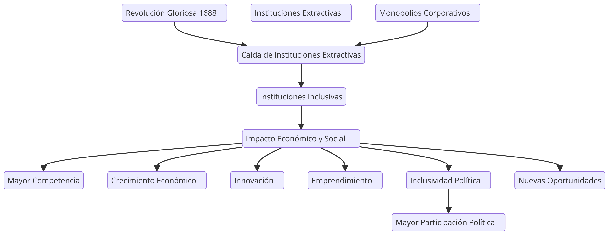

Este capítulo aborda casos específicos donde instituciones extractivas colapsan, mostrando ejemplos históricos de cambio. Uno de estos es la Revolución Gloriosa en Inglaterra en 1688, que marcó el comienzo de la caída de instituciones extractivas, permitiendo la creación de instituciones inclusivas que fomentaron el crecimiento económico.
En términos de empresas extractivas, este es un punto crucial donde las corporaciones que han disfrutado de monopolios y poder empiezan a perder su influencia. El fin de estas instituciones extractivas trae consigo una ola de innovación, competencia y emprendimiento, que anteriormente había sido reprimida por el poder empresarial concentrado.